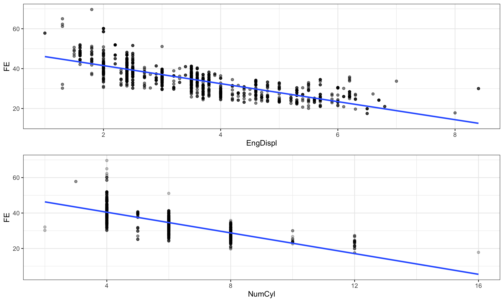
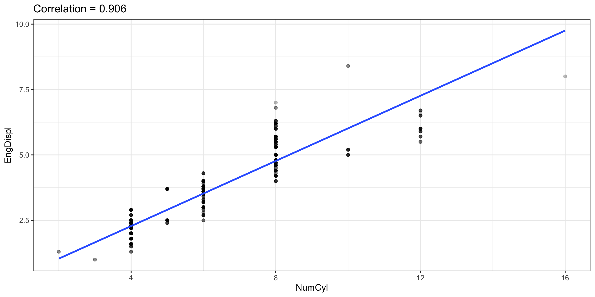
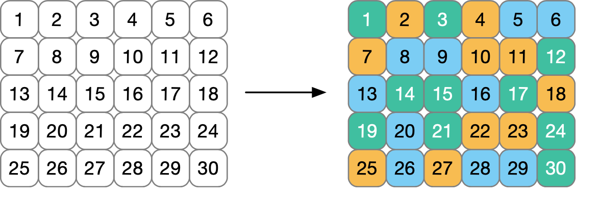
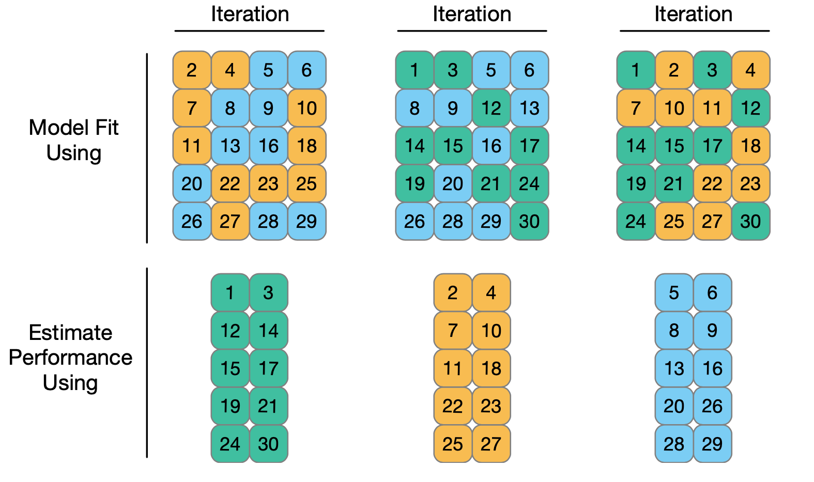

Rows: 1,107
Columns: 14
$ EngDispl <dbl> 4.7, 4.7, 4.2, 4.2, 5.2, 5.2, 2.0, 6.0, 3.0, 3.0, …
$ NumCyl <int> 8, 8, 8, 8, 10, 10, 4, 12, 6, 6, 6, 6, 16, 8, 8, 8…
$ Transmission <fct> AM6, M6, M6, AM6, AM6, M6, S6, S6, S6, M6, S7, M6,…
$ FE <dbl> 28.0198, 25.6094, 26.8000, 25.0451, 24.8000, 23.90…
$ AirAspirationMethod <fct> NaturallyAspirated, NaturallyAspirated, NaturallyA…
$ NumGears <int> 6, 6, 6, 6, 6, 6, 6, 6, 6, 6, 7, 6, 7, 6, 6, 6, 6,…
$ TransLockup <dbl> 1, 1, 1, 1, 0, 0, 0, 0, 1, 0, 1, 0, 0, 0, 1, 0, 0,…
$ TransCreeperGear <dbl> 0, 0, 0, 0, 0, 0, 0, 0, 0, 0, 0, 0, 0, 0, 0, 0, 0,…
$ DriveDesc <fct> TwoWheelDriveRear, TwoWheelDriveRear, AllWheelDriv…
$ IntakeValvePerCyl <int> 2, 2, 2, 2, 2, 2, 2, 2, 2, 2, 2, 2, 2, 1, 1, 1, 1,…
$ ExhaustValvesPerCyl <int> 2, 2, 2, 2, 2, 2, 2, 2, 2, 2, 2, 2, 2, 1, 1, 1, 1,…
$ CarlineClassDesc <fct> 2Seaters, 2Seaters, 2Seaters, 2Seaters, 2Seaters, …
$ VarValveTiming <dbl> 1, 1, 1, 1, 1, 1, 1, 1, 1, 1, 1, 1, 1, 0, 0, 0, 0,…
$ VarValveLift <dbl> 0, 0, 0, 0, 0, 0, 0, 0, 1, 1, 0, 0, 0, 0, 0, 0, 0,…
Cross Validation
Grayson White
Stat 243
Week 4 | Fall 2026
Goals for today (and next time)
Today:
Discuss model selection
Define and discuss resampling and cross-validation
Investigate methods of cross-validation (k-fold cv)
Implement CV in R
Friday:
- Quiz 2 on Lab 2 material.
- Lab 3 released.
Model Selection and Validation
Selecting a good model is central to this course
We can always select a model with tons of predictors, interactions, and non-linear terms.
\(R^2\) and training error are guaranteed to improve!
…we’re also likely to be overfitting.
p-values get larger, confidence intervals wider, interpretations harder, etc.
Selecting a “parsimonious” model usually lowers test MSE.
- Principle of Parsimony: The simplest reasonable model is usually the best.
Selecting a good model is central to this course
Task: Choose model that retains only “important” predictors (i.e., \(\beta_k\neq0\))
Generally good practices:
If some variables are highly correlated, remove redundant ones
If \(R^2\) is low, try adding more variables
If adding a polynomial term (e.g., \(X^3\)), include lower terms too (e.g., \(X, \ X^2\))
If adding an interaction (e.g., \(X_1X_2\)), include individual terms too (e.g., \(X_1, \ X_2\))
Re-check diagnostics as you add/remove terms
Selecting a good model is central to this course
Task: Choose model that retains only “important” predictors (i.e., \(\beta_k\neq0\))
Generally bad practices:
Selecting a model based on p-values (e.g., forward/backward selection)
All downstream inferences are invalid; p-values lose all meaning
This is an example of “p-hacking,” which is a very big issue in applied research!
Q: Is there a more general way of selecting / validating a model?
A: Splitting the data into “training” and “test” sets!
Example: Fuel Economy
The FuelEconomy data (from the AppliedPredictiveModeling package) contains Fuel Efficiency (FE; in MPG) and other variables for 1107 cars and trucks from 2010
- data taken from the http://fueleconomy.gov website
Data Exploration
Let’s consider just numeric variables:
Variables highly correlated with FE:
Engine Displacement (
EngDispl)Number of Cylinders (
NumCyl)

Collinearity
Do we want both EngDispl and NumCyl in our model for FE?
- Each is strongly correlated with
FE…
- …thus, they might be highly collinear:

We now have a model selection problem: Which variables to include?
Training and Test Sets
Let’s create a 70-30 training-test split:
We will fit two models:
fullmodincludes all quantitative predictorssmallmodwill excludeNumCyl,NumGears,IntakeValvePerCy, andVarValveLift
Let’s train!
Training: Fit each model to the training data
fullmod <- lm(FE ~ EngDispl + NumCyl + NumGears + TransLockup +
TransCreeperGear + IntakeValvePerCyl + ExhaustValvesPerCyl +
VarValveTiming + VarValveLift,
data = cars_train)
smallmod <- lm(FE ~ EngDispl + TransLockup + TransCreeperGear +
ExhaustValvesPerCyl + VarValveTiming,
data = cars_train)
round(c(summary(fullmod)$r.sq, summary(smallmod)$r.sq), 3)[1] 0.628 0.624fullmod has a slightly higher \(R^2\), but is it really better?
And now we test!
Testing: Calculate MSE on the test set
[1] 18.45154smallmod has slightly higher test MSE than fullmod!
- Could this be a fluke of our randomly-split test set?
Problems with Test Sets
Q: What are some problems with this simple Training / Test approach?
If full dataset is small, splitting into training/test further restricts sample size
- Both training and test performance may have high variance.
- A single randomly-split training set may be unusual \(\to\) Bias in model validation
- A single randomly-split test set doesn’t give good estimate for amount of error.
How to Improve the Training/Testing Procedure:
Cross-Validation (CV):
Resample many samples from training data and refit model in each sample.
Assess model accuracy by “cross-validating” to many test set
Resampling and CV
\(k\)-fold Cross Validation (CV)
\(k\)-fold CV: Start by randomly partitioning data into \(k\) sets, or folds, of size \(n/k\). Then,
Choose one subset of size \(n/k\) as the validation set
Use the remaining \(k-1\) subsets as the training set to build the model
Calculate error rate (e.g., MSE) on the validation set
Repeat Steps 1-3 for each validation set
Average the error rate computed among the \(k\) validation sets
\(k\)-fold Cross Validation (CV)
The cross-validation estimate \(CV_{(k)}\) for average test MSE is: \[ CV_{(k)} = \frac{1}{k} \sum_{i =1}^k \textrm{MSE}_i \] where \(\textrm{MSE}_i\) is test MSE when the \(i\)th set, or fold, is used as validation set.
Because the partitioning into folds is random, \(CV_{(k)}\) still has some variability.
But less than just using a single validation set!
To reduce variability further, \(k\)-fold CV can be performed multiple times, and the results of \(CV_{(k)}\) themselves averaged.
Ex: 3-fold CV
Consider 30 training observations below. Colors indicate a random fold allocation.

Ex: 3-fold CV
Each iteration uses 2 of the folds to build a model, and the remaining fold to assess performance.

Overall performance is obtained by averaging across iterations.
CV in R: the vfold_cv function
We’ll use the vfold_cv function in rsample to perform cross-validation.
This code splits the data into 10 (nearly) equal folds and stores results as a resample object with 2 parts:
id, a vector with fold identifiers (i.e “Fold01”, “Fold02”, … )
splits, anRlist whose elements correspond to each split of the data into \(k-1\) training and \(1\) validation sets
CV in R: the vfold_cv function
Previous Code:
Get Training Set for a fold: apply analysis to one of the Splits elements.
Goal: use cross-validation to assess which model is “best”
Steps:
Obtain training set
Fit linear model
Predict on assessment/validation data
Assess accuracy
rsample package did all the splitting for us (step 1)!
But no model fitting or computing MSE (steps 2 - 4).
How to do steps 2 - 4?
Fit the all the models!
Fit the all the models!
We could do steps 2 -4 “by hand”, e.g.,
full_train_1 <- lm(FE ~ EngDispl + NumCyl + NumGears + TransLockup +
TransCreeperGear + IntakeValvePerCyl + ExhaustValvesPerCyl +
VarValveTiming + VarValveLift,
data = folds_cars$splits[[1]] %>% analysis())
small_train_1 <- lm(FE ~ EngDispl + TransLockup + TransCreeperGear +
ExhaustValvesPerCyl + VarValveTiming,
data = folds_cars$splits[[1]] %>% analysis())
full_pred_1 <- predict(full_train_1, newdata = folds_cars$splits[[1]] %>% assessment())
small_pred_1 <- predict(small_train_1, newdata = folds_cars$splits[[1]] %>% assessment())
RMSE_full_1 <- sqrt(mean( (full_pred_1 - folds_cars$splits[[1]] %>% assessment() %>% pull(FE))^2))
RMSE_small_1 <- sqrt(mean( (small_pred_1 - folds_cars$splits[[1]] %>% assessment() %>% pull(FE))^2))
RMSE_full_1[1] 3.959213[1] 3.959354- Need to loop over all splits (1, 2, 3, …, 10).
- Could write this into a
function()or afor()loop and do it ourselves…
For loop approach
n_folds <- 10
RMSE_full <- list()
RMSE_small <- list()
for (i in 1:n_folds) {
full_train_i <- lm(
FE ~ EngDispl + NumCyl + NumGears + TransLockup +
TransCreeperGear + IntakeValvePerCyl + ExhaustValvesPerCyl +
VarValveTiming + VarValveLift,
data = folds_cars$splits[[i]] %>% analysis()
)
small_train_i <- lm(
FE ~ EngDispl + TransLockup + TransCreeperGear +
ExhaustValvesPerCyl + VarValveTiming,
data = folds_cars$splits[[i]] %>% analysis()
)
full_pred_i <- predict(full_train_i, newdata = folds_cars$splits[[i]] %>% assessment())
small_pred_i <- predict(small_train_i, newdata = folds_cars$splits[[i]] %>% assessment())
RMSE_full[[i]] <- sqrt(mean((full_pred_i - folds_cars$splits[[i]] %>% assessment() %>% pull(FE))^2))
RMSE_small[[i]] <- sqrt(mean((small_pred_i - folds_cars$splits[[i]] %>% assessment() %>% pull(FE))^2))
}
mean(unlist(RMSE_full))[1] 4.508613[1] 4.520042Not super nice code…
We can use the
tidymodels!
tidymodels
- The
tidymodelsare a collection of packages built for predictive modeling that maintain consistent syntax across model types.- e.g., fitting a linear regression model and a tree-based regression model (which we’ll learn about after Fall Break) require almost identical code!
- Lots of really thoughtful built-in functions for predictive modeling.
- Developed and maintained by the folks at Posit, who created
RStudioand thetidyverse. - Simon Couch ’21 worked extensively on the
tidymodelsafter graduating from Reed, although now he works on a different team at Posit.
Fitting models with the tidymodels
Consider our smallmod.
Call:
lm(formula = FE ~ EngDispl + TransLockup + TransCreeperGear +
ExhaustValvesPerCyl + VarValveTiming, data = cars_train)
Coefficients:
(Intercept) EngDispl TransLockup
53.5896 -4.5647 -0.8766
TransCreeperGear ExhaustValvesPerCyl VarValveTiming
-1.5806 -1.7615 1.2568 With the tidymodels:
parsnip model object
Call:
stats::lm(formula = FE ~ EngDispl + TransLockup + TransCreeperGear +
ExhaustValvesPerCyl + VarValveTiming, data = data)
Coefficients:
(Intercept) EngDispl TransLockup
53.5896 -4.5647 -0.8766
TransCreeperGear ExhaustValvesPerCyl VarValveTiming
-1.5806 -1.7615 1.2568 Fitting (many) models with the tidymodels
Consider our smallmod:
With the tidymodels, we can specify this model form to be fit on many different datasets:
# loads the tidymodels
library(tidymodels)
# specifies we'd like to do linear regression with the lm() function
lm_spec <- linear_reg() %>%
set_engine("lm")
# creates a "workflow" to be used on many datasets
# NOTICE: no data is supplied
smallmod_wf <- workflow() %>%
add_model(lm_spec) %>%
add_formula(FE ~ EngDispl + TransLockup + TransCreeperGear +
ExhaustValvesPerCyl + VarValveTiming) Get Results
fit_resamples() fits the workflow on each training set and evaluates it on the matching assessment set.
collect_metrics() collects the metrics calculated on each test set.
# A tibble: 10 × 5
id .metric .estimator .estimate .config
<chr> <chr> <chr> <dbl> <chr>
1 Fold01 rmse standard 3.96 pre0_mod0_post0
2 Fold02 rmse standard 4.04 pre0_mod0_post0
3 Fold03 rmse standard 4.86 pre0_mod0_post0
4 Fold04 rmse standard 5.03 pre0_mod0_post0
5 Fold05 rmse standard 4.50 pre0_mod0_post0
6 Fold06 rmse standard 4.18 pre0_mod0_post0
7 Fold07 rmse standard 4.98 pre0_mod0_post0
8 Fold08 rmse standard 4.31 pre0_mod0_post0
9 Fold09 rmse standard 4.85 pre0_mod0_post0
10 Fold10 rmse standard 4.50 pre0_mod0_post0Get Results
fit_resamples() fits the workflow on each training set and evaluates it on the matching assessment set.
collect_metrics() collects the metrics calculated on each test set.
Comparing Models
Now, we can run the same code for our fullmod:
fullmod_wf <- workflow() %>%
add_model(lm_spec) %>%
add_formula(FE ~ EngDispl + NumCyl + NumGears + TransLockup +
TransCreeperGear + IntakeValvePerCyl + ExhaustValvesPerCyl +
VarValveTiming + VarValveLift)
fullmod_res <- fit_resamples(
fullmod_wf,
resamples = folds_cars,
metrics = metric_set(rmse)
)
collect_metrics(fullmod_res) # A tibble: 1 × 6
.metric .estimator mean n std_err .config
<chr> <chr> <dbl> <int> <dbl> <chr>
1 rmse standard 4.51 10 0.120 pre0_mod0_post0- Note that we are using the same
lm_specas before.
Comparing Models
Which model is best?
# A tibble: 1 × 6
.metric .estimator mean n std_err .config
<chr> <chr> <dbl> <int> <dbl> <chr>
1 rmse standard 4.51 10 0.120 pre0_mod0_post0# A tibble: 1 × 6
.metric .estimator mean n std_err .config
<chr> <chr> <dbl> <int> <dbl> <chr>
1 rmse standard 4.52 10 0.124 pre0_mod0_post0How to choose the number of folds, \(k\)
Selecting the Number of Folds, \(k\)
- What’s the smallest value \(k\) can be in \(k\)-fold CV? Largest?
- A: \(K\in\{2,3,\dots,n\}\)
- What are some pros and cons of small \(k\)?
- Pro: Easier computation (fewer models to train), but…
- Con: Training data is small: doesn’t reflect true size of training data
- What are some pros and cons of large \(k\)?
- Con: Harder computation (many models to train), but…
- Pro: Training data is large: reflect true size of training data
Selecting the Number of Folds, \(k\)
\(k = 10\) is a common ‘rule of thumb’. But choosing \(k\) depends on your data and context!!
- If \(n\) is small, \(k = 10+\) is generally a good choice,
- If \(n\) is large and computation time is long, \(k = 5\) typically does fine.
Next time:
- Quiz on Lab 2 content.
- Lab 3 released.